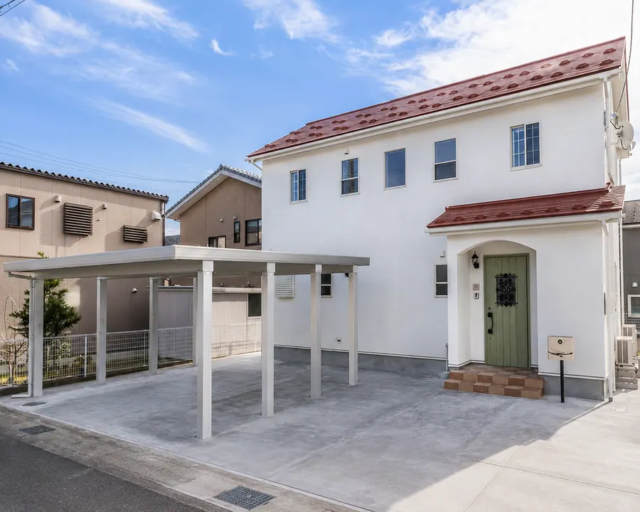
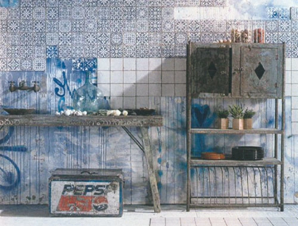
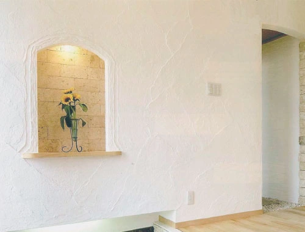
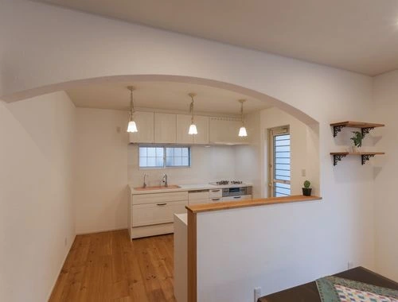

Prettyの家づくり
暮らしを支える、５つの特徴。
- 作るを楽しむＤＩＹ住宅
- 無垢材と漆喰を取り入れる住まい
- 断熱・換気で室内環境を考える住まい
- 光熱費が少ない省エネ・高性能住宅
- 保証内容・適用条件は契約前に確認

Prettyのポイント
作るを楽しむＤＩＹ住宅
世界の素敵なエコ素材で、オンリーワンライフを。
プリティはその名の通り、随所にかわいいポイントを持ったデザイン住宅。人気のＤＩＹ材チークの古材や、キッチンのカラータイル、ホーローシンク、大理石カウンター、洗面所の陶器タイル等、世界の素敵なエコ素材を取り入れたテイストのエコハウスです。セルフビルドの楽しさを叶えて、あなたなりの自由な味付けをして、訪れた人が「かわいい」と、思わずつぶやいてしまいそうな、そんな家づくり、一緒にはじめませんか。

Prettyのポイント
天然素材の安全住宅
乾燥無垢材や漆喰など、仕上げの素材を選びます。
原サイトでは、構造材の乾燥無垢材、ヒノキの土台、漆喰の内装を紹介しています。材料の種類・使用範囲・仕上げ方法は、現在の商品仕様と個別の見積書で確認します。
自然素材にも、木の収縮や割れ、塗り壁のひびなど、素材ごとの性質と手入れがあります。仕上げの特徴を確かめながら選びます。

Prettyのポイント
光熱費が少ない省エネ・高性能住宅
断熱と設備を組み合わせ、エネルギーの使い方を考えます。
Prittyは、家全体の断熱性能を高めて冷暖房効率を向上さることで、高性能省エネ設備が使うエネルギーを、より一層削減しました。高騰する電気代をはじめ、家計を苦しめるエネルギー経費を出来るだけ抑える工夫をした住宅です。設備は性能はもとより、特徴である「かわいい」を活かした、木製キッチン、木製洗面台の無垢材扉もドアとコーディネイトできるよう、カラフルに提案しています。
家づくり無料相談
理想の暮らしを、お聞かせください。
暮らしのアンケートで、家族の理想の家づくりを発見。